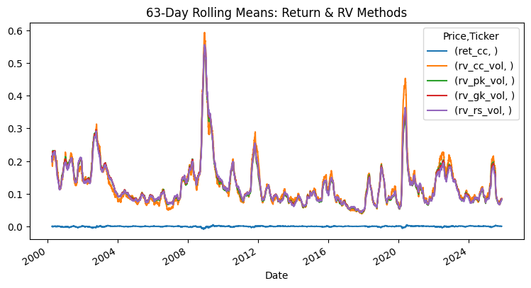

Built a central portfolio controller for allocation, rebalancing and risk constraints. Reworked the backtesting pipeline for reproducible, out-of-sample validation. Led the integration of two independent strategies.
A 3D renderer built from scratch without any 3D graphics API. Everything from the transformation matrices to the final shaded triangles is computed in Python and NumPy, then drawn with Matplotlib.
Problem
Graphics APIs hide the pipeline behind a draw call. The goal was to write each stage myself, so that every transform, test and colour on screen is something I computed.
Pipeline
World, view and projection transforms. Model vertices move into camera space and are projected.
Perspective divide. Dividing by depth maps them into normalized device coordinates.
Backface culling. Triangles whose normal points away from the camera are discarded.
NDC-space z-clipping and z-sorting. Geometry outside the depth range is clipped; the rest is sorted and drawn far to near (painter’s algorithm).
Diffuse lighting from a directional light, per face.
Tradeoffs in the design
Painter’s algorithm sorts whole faces instead of keeping a per-pixel depth buffer. That fits an output made of filled polygons, but it can’t resolve faces that intersect or overlap in a cycle. Clipping after the perspective divide turns the depth test into a simple range comparison in NDC.
Try the pipeline
The bench below re-implements the same stages in JavaScript and Canvas 2D. It is an illustration for the web; the original renderer is Python.
Seeing depth as heat
A custom depth-based thermal-vision effect written in HLSL and exposed through a Unity PostProcessing volume, so it can be tuned from the editor like any built-in effect.
How it works
Depth → heat. Scene depth is remapped onto a cold-to-hot colour ramp. The max-distance range is adjustable; anything beyond it clamps to the coldest colour.
Edge outlining. A Sobel operator over the depth buffer finds silhouettes and draws them as outlines.
Film grain. A procedural grain pass adds the noise of a real thermal sensor.
Why depth
Because heat is derived from the depth buffer, the effect is a pure screen-space pass: it needs no per-object temperature data and works on any scene it is applied to.
Try it
Browser illustration with SVG. The real shader runs on the GPU inside Unity.
Does today’s volatility predict tomorrow’s return?
A hypothesis-driven study on daily SPY data from 2000 onward: compute several realized-volatility estimators, test whether today’s volatility carries information about tomorrow’s return, and backtest the resulting signal out of sample.
R², next-day return on Garman–Klass volatility alone
0.000
Lagged-return coefficient (p = 0.005)
−0.063
Signal Sharpe on the test period (buy-and-hold 0.55)
0.66
Method
Realized volatility from four estimators: close-to-close, Parkinson, Garman–Klass and Rogers–Satchell.
Correlation and quintile-bucket analysis of volatility against next-day returns.
OLS regressions with a time-based train / validation / test split, then adding lagged return and a volatility-of-volatility control.
A simple long/short signal from the fitted model, backtested on the held-out test period.
Findings
Volatility clusters and is predictable; next-day returns are not. Correlation between every estimator and next-day return is near zero, and volatility alone has no explanatory power (R² = 0.000). Adding lagged return and volatility change lifts R² to 0.004, with a significant negative lagged-return coefficient — mild mean reversion.

Fig. 3b 63-day rolling volatility. The four estimators track each other closely, spiking in 2008 and 2020.
Outcome, and the catch
Out of sample the signal reached a Sharpe of 0.66 against 0.55 for buy-and-hold — but with about 49% average daily turnover, so transaction costs would matter in practice.
Pipeline stage
Drag to rotate · dashed square = NDC [−1, 1]
Vertices
12
Faces drawn
—
Culled
—
Draw order
—
Note
—
A JavaScript + Canvas 2D port of the pipeline for the browser. The original renderer is Python, NumPy and Matplotlib.